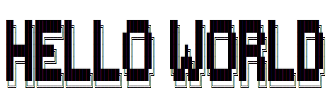

Technology is the campfire around which we tell our stories. -- Laurie Anderson

As an offering in the Technology and Society minor at UVic, this course is about the entanglement of society and culture with technologies. We'll examine some histories of these entanglements, discuss their effects today, and also speculate about their trajectories. One important question will persist throughout the term: how can and should we intervene in technologies as practices? Rather than treating technologies as objects, instruments, or tools that we examine from a distance, we'll prototype with and through them as a form of inquiry. You'll turn patents into 3-D forms, write scripts for use scenarios, "datify" old tech, and design a device you want to see in the world. You'll document your research and development process along the way, reflect on what you learned, present your prototypes and findings, and also develop a vocabulary of "keywords" for technology and society. I will not assume that you're familiar with fields such as media studies, technology studies, or cultural studies, and the prototyping exercises will rely on low-tech approaches. Technical competency required: know how to send an email.


MODULE 1: Memory, Novelty, Obsolescence
Technologies are entwined with the social and cultural production of memory, novelty, and obsolescence. Consider the use of search engines to recall information, the rate at which mobile devices are discarded, or how frequently software demands an update. What might history tell us about these issues, and what might we learn from prototyping old technologies that were once new?
KEYWORDS: affect (Anna Munster), angel of history (Walter Benjamin), archaeology (Wolfgang Ernst and Jussi Parikka), black box (Bruno Latour), entanglement (Karen Barad), failure (Edward Jones-Imhotep), formats (Jonathan Sterne), index (Mary Ann Doane), infrastructure (Shannon Mattern), interface (Lori Emerson), magic (Carolyn Marvin), memory (Wendy Hui Kyong Chun), new media (Lisa Gitelman and Lev Manovich), planned obsolescence (Giles Slade and Kathleen Fitzpatrick), remediation (Jay David Bolter and Richard Grusin), and storage (Matthew Kirschenbaum)
PROTOTYPING TECHNIQUE: 2-D to 3-D translation
M 11 SEPT: Watch (before class) "First Sounds: Humanity's First Recordings of Its Own Voice" (David Giovannoni) and "When Games Went Click: The Story of Tennis for Two" (Raiford Guins, Laine Nooney, Vlad Nudin, et al.) | Form Groups (in class) | Watch (in class) "Uluatore" (Fiona Keenan) | Lecture: From Inventors and Innovation to Mess and Maintenance | Workshop: Logging Your Work in this Course
R 14 SEPT: Read (before class) "Society" (Glenn Hendler) and "Technology" (me) | Lecture: Beyond Tools and Instruments | Workshop: Finding and Reading Patents
M 18 SEPT: Read (before class) "Funes the Memorious" (Jorge Luis Borges) and "The Story of Cold Dark Matter" (Cornelia Parker and Tate) | Watch (in class) "Memex Animation: Vannevar Bush's Diagrams Made Real" (University of Sheffield) | Lecture: Re-membering the Past | Workshop: The Exploded View
R 21 SEPT: Research and Develop Your First Prototype (before and during class) | Workshop: Absence, Form, and Practice in Patents
M 25 SEPT: Finish and Present Your First Prototype (before and during class)
LOG FOR MODULE 1 (11 Sept - 25 Sept): Find a patent (dated between 1850 and 1950) for a technology that no longer exists, is no longer popular, or both. Determine why it was considered to be novel during its time, and also why it was rendered obsolete. Also determine what the technology was expected to "remember" (recall, process, and/ or compile) for people. After you've conducted this research and written down your findings in your log, use materials of your choice (e.g., paper, cardboard, plasticine, and software) to bring your technology off the page, translating your 2-D patent into a 3-D form. (Bonus points if you get your prototype to work.) Once you've prototyped the form, use ~400 words to communicate what you learned about memory, novelty, or obsolescence (pick one) from the prototyping process. Be sure to log your research and prototyping as you progress through the module (from 11 Sept to 25 Sept) and include in the log some documentation of the prototyping process (e.g., photographs, sketches, and/or video) as well as notes from the workshops, lectures, and assigned readings and video.
^^^ top of page ^^^

MODULE 3: Labour, Play, Control
Questions
KEYWORDS: (Karl Marx and Nick Dyer-Witheford), data (Melissa Gregg and Dawn Nafus)
PROTOTYPING TECHNIQUE:
R 19 OCT:
M 23 OCT:
R 26 OCT:
M 30 OCT:
R 2 NOV:
LOG:
^^^ top of page ^^^
I owe an incredible debt of gratitude to , whose approaches to teaching and making technologies have especially influenced the construction of this syllabus.